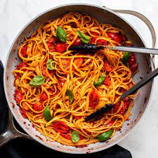

Tomato Basil Pasta

Description
Tomato Basil Pasta is a classic Italian dish known for its simple yet incredibly flavorful combination of ripe tomatoes, fresh basil, and garlic. This dish is perfect for a light and refreshing meal. The sweet and tangy tomatoes complement the aromatic basil, creating a delightful taste sensation. Serve it with a sprinkle of parmesan cheese for an extra burst of flavor.
Ingredients
- 250g pasta (such as spaghetti or fettuccine)
- 4 ripe tomatoes
- 1 cup fresh basil leaves
- 3 cloves garlic
- 1/4 cup olive oil
- Salt and pepper to taste
Steps
- Cook the pasta according to package instructions until al dente. Drain and set aside.
- Dice the tomatoes and chop the basil leaves.
- In a large pan, heat olive oil over medium heat. Add minced garlic and cook until fragrant.
- Add the diced tomatoes to the pan and cook until they begin to soften.
- Toss the cooked pasta with the tomato mixture. Season with salt and pepper to taste.
- Serve hot, garnished with fresh basil leaves.